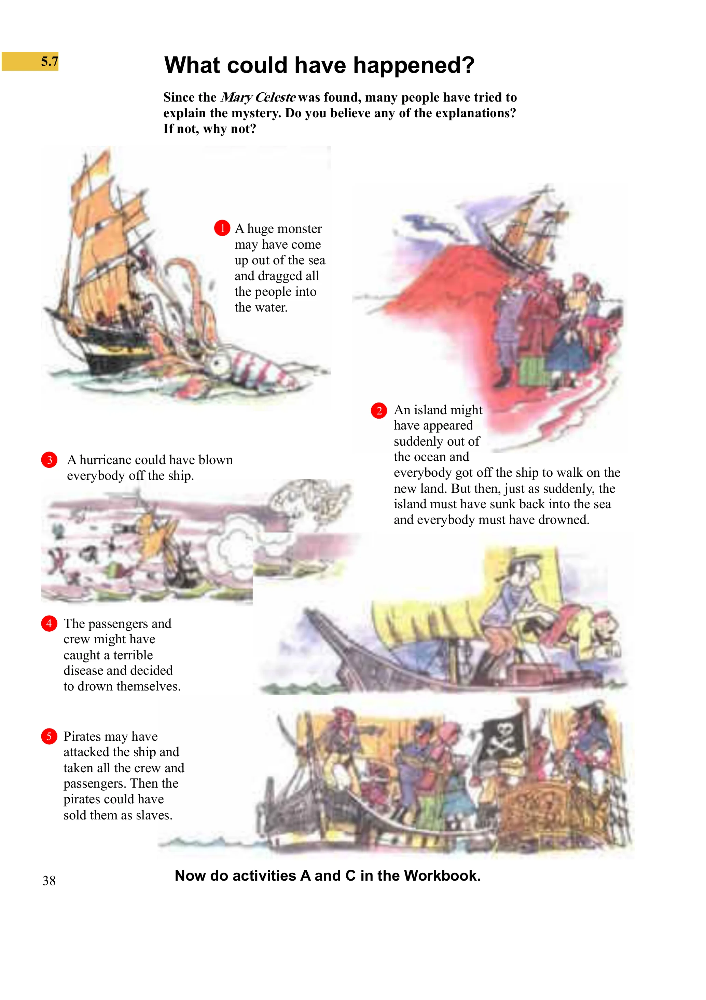

5.7 What could have happened? Since the Mary Celeste was found, many people have tried to explain the mystery. Do you believe any of the explanations? If not, why not? 1 A huge monster may have come up out of the sea and dragged all the people into the water. 2 An island might have appeared suddenly out of the ocean and everybody got off the ship to walk on the new land. But then, just as suddenly, the island must have sunk back into the sea and everybody must have drowned. 3 A hurricane could have blown everybody off the ship. 4 The passengers and crew might have caught a terrible disease and decided to drown themselves. 5 Pirates may have attacked the ship and taken all the crew and passengers. Then the pirates could have sold them as slaves. Now do activities A and C in the Workbook.
delivering خطأً بدل believing: Discuss your reasons for delivering or not believing any of the explanations.، وحُفظت حرفياً مع الإشارة إليها في REVIEW_NEEDED.md.[
{
"num": 1,
"question": "The sailors must have mutinied ... (2 matching reasons)",
"model_answer": "• The sailors must have mutinied because the Captain found a blood-stained sword.\n• The sailors must have mutinied because sailors often disobeyed their captain.",
"explain_ar": "الدليلان اللذان يرجّحان حدوث التمرد هما السيف الملطخ وتكرار عصيان البحارة تاريخياً."
},
{
"num": 2,
"question": "The sailors cannot have mutinied ... (3 matching reasons)",
"model_answer": "• The sailors cannot have mutinied because there was no sign of trouble.\n• The sailors cannot have mutinied because the boats were still hanging in their correct places.\n• The sailors cannot have mutinied because all the gold and jewellery were still on the boat.",
"explain_ar": "هدوء السفينة وبقاء قوارب النجاة والذهب ينفي حدوث تمرد."
}
][
{
"label_ar": "5.7 B — دحض النظريات الخمس بتركيب would have (أمثلة المنهج)",
"placeholder": "1. A hurricane cannot have blown everybody off because everything was tidy; there would have been some damage.\n2. The crew cannot have caught a sudden fatal disease because the captain would have written something in the ship's diary.\n3. Pirates cannot have attacked because nobody took the gold; otherwise somebody would have taken the gold."
},
{
"label_ar": "5.7 C — اختيار أفضل تفسير في 4 جمل متماسكة (أو اقتراح التفسير الأقرب)",
"placeholder": "I do not think any of the five printed explanations fits all the facts, though perhaps pirates who were afraid of the ship (or a sudden emergency on deck) might have happened, as there was no sign of robbery. They cannot have suffered a hurricane because everything was tidy and undamaged. Nor could the crew have escaped in the lifeboats, since the boats were still hanging in their places. Therefore, the people must have left suddenly for an unknown reason without panic or theft."
}
]{
"pb_text_vs_image": "طُوبقت التفسيرات الخمسة في PB ص 38 كاملة مع pb-40.png وأُرفقت لوحات pb38_explanations.webp أوفلاين.",
"wb_ocr_vs_image": "طُوبقت صفحتا WB ص 63–64 مع wb-064.png وwb-065.png: استُعيد السبب الخامس المتشوه في OCR ('hecance cailore...' ← 'because sailors often disobeyed their captain.') وحُفظ الخطأ المطبعي 'for delivering or not believing' في 5.7 B حرفياً."
}